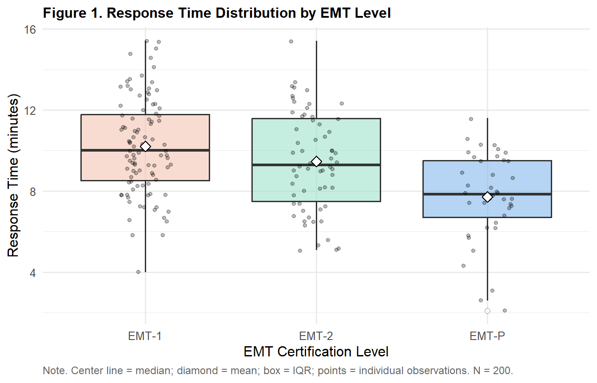
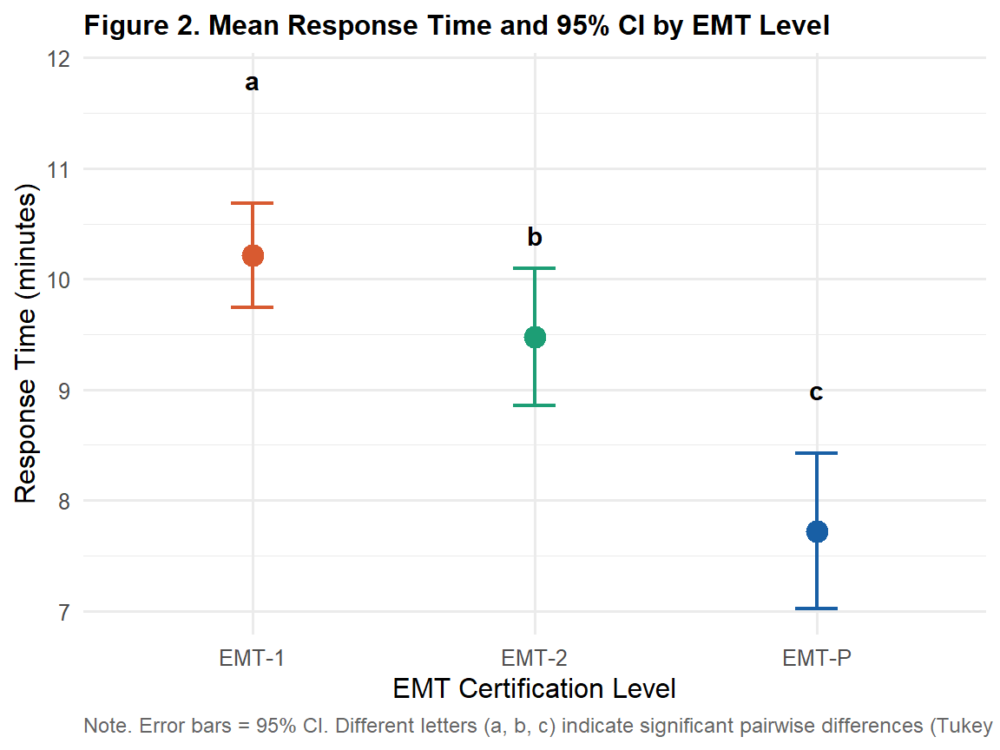

library(tidyverse)
library(gt)
library(car)
library(rstatix)
ems <- read.csv("data/ems_main.csv",
stringsAsFactors = FALSE)
ems$gender <- factor(ems$gender,
levels = c("男", "女"))
ems$level <- factor(ems$level,
levels = c("EMT-1", "EMT-2", "EMT-P"))
ems$district <- factor(ems$district,
levels = c("北部", "中部", "南部", "東部"))
ems$shift <- factor(ems$shift,
levels = c("日班為主", "夜班為主", "輪班"))Topic 7：One-Way ANOVA
F-statistic, Post-Hoc Comparisons, Effect Size, APA Reporting
Learning Objectives
- Understand the statistical logic of ANOVA and the meaning of the F-statistic
- Correctly execute one-way ANOVA and post-hoc comparisons
- Calculate and interpret effect size (η²)
- Produce APA-format result tables and reporting sentences
Statistical Method Map (This Topic)
| X (Predictor) | Y (Outcome) | Method | Nonparametric Alternative |
|---|---|---|---|
| Categorical (2 groups) | Continuous | t-test (Topic 6) | Mann-Whitney U |
| Categorical (≥ 3 groups) | Continuous | One-way ANOVA | Kruskal-Wallis (Topic 8) |
Note
Why not run multiple t-tests instead? With 3 groups, you would need 3 pairwise t-tests. At α = .05 each, the familywise Type I error rate inflates to 1 − (0.95)³ = 14.3%. ANOVA tests all groups simultaneously in a single test, controlling the overall error rate at α = .05.
I. Statistical Theory
1.1 The Core Logic of ANOVA
ANOVA partitions the total variability in the data (Total SS) into two sources:
\[SS_{\text{Total}} = SS_{\text{Between}} + SS_{\text{Within}}\]
- Between-group variance (SS_Between): Differences between group means and the grand mean → reflects the effect of X on Y
- Within-group variance (SS_Within): Differences between individual observations and their group mean → reflects individual variability and measurement error
Intuition: If between-group differences are much larger than within-group differences, there is good reason to believe the group means are genuinely different.
1.2 The F-Statistic
\[F = \frac{MS_{\text{Between}}}{MS_{\text{Within}}} = \frac{SS_{\text{Between}} / (k-1)}{SS_{\text{Within}} / (N-k)}\]
- k = number of groups; N = total sample size
- MS = Mean Square = SS ÷ degrees of freedom
- Larger F → between-group differences are large relative to within-group noise → stronger evidence against H₀
H₀: All group population means are equal (μ₁ = μ₂ = μ₃ = …)
Important
ANOVA’s F-test only tells you “at least one group differs.” It does not tell you which groups differ. Post-hoc comparisons are required to locate the specific differences.
1.3 Assumptions
| Assumption | Description | How to Check |
|---|---|---|
| Normality | Y approximately normal within each group | Shapiro-Wilk; Q-Q plot |
| Homogeneity of variance | Equal variances across groups | Levene’s test |
| Independence | Observations are mutually independent | Design-level judgment |
Tip
If Levene’s test p < .05 (unequal variances): Use Welch’s ANOVA (oneway.test()), analogous to the Welch correction for independent t-tests. Follow with Games-Howell post-hoc comparisons.
1.4 Post-Hoc Tests
After a significant ANOVA, post-hoc comparisons identify which specific pairs of groups differ:
| Method | When to Use | Conservativeness |
|---|---|---|
| Tukey HSD | All pairwise comparisons, equal group sizes | Moderate |
| Bonferroni | Few planned comparisons | More conservative |
| Scheffé | All possible contrasts, unequal group sizes | Most conservative |
| Games-Howell | Unequal variances | Moderate |
Course recommendation: Default to Tukey HSD; use Games-Howell when variances are unequal.
1.5 Effect Size: η² (Eta-Squared)
\[\eta^2 = \frac{SS_{\text{Between}}}{SS_{\text{Total}}}\]
Represents the proportion of Y’s total variance explained by group membership.
| η² range | Strength |
|---|---|
| .01–.05 | Small effect |
| .06–.13 | Medium effect |
| ≥ .14 | Large effect |
Note
η² tends to be slightly inflated with larger samples. A less biased version is ω² (Omega-squared), available from the effectsize package.
II. Analysis Workflow
Step 1: Descriptive statistics + boxplot (n, Mean, SD per group)
↓
Step 2: Assumption checks
├── Normality: Shapiro-Wilk
└── Homogeneity of variance: Levene's test
↓
Step 3: Run ANOVA
├── Equal variances → aov() + TukeyHSD()
└── Unequal variances → oneway.test() + Games-Howell
↓
Step 4: Compute effect size (η²)
↓
Step 5: APA-format reportIII. R Implementation
Load packages and data
Research question: Do the three EMT certification levels (EMT-1, EMT-2, EMT-P) differ significantly in mean on-scene response time?
Figure 1. Distribution by Group
ggplot(ems, aes(x = level, y = response_time,
fill = level)) +
geom_boxplot(alpha = 0.6,
outlier.shape = 21,
outlier.fill = "white",
outlier.size = 2) +
geom_jitter(width = 0.15, alpha = 0.25, size = 1.2) +
stat_summary(fun = mean, geom = "point",
shape = 23, size = 3,
fill = "white", color = "black") +
scale_fill_manual(
values = c("EMT-1" = "#F5C4B3",
"EMT-2" = "#9FE1CB",
"EMT-P" = "#85B7EB")
) +
labs(
title = "Figure 1. Response Time Distribution by EMT Level",
x = "EMT Certification Level",
y = "Response Time (minutes)",
caption = "Note. Center line = median; diamond = mean; box = IQR; points = individual observations. N = 200."
) +
theme_minimal(base_size = 12) +
theme(
plot.title = element_text(face = "bold", size = 12),
legend.position = "none",
plot.caption = element_text(hjust = 0, size = 9,
color = "gray40")
)
Table 1. Descriptive Statistics by Group
ems |>
dplyr::group_by(level) |>
dplyr::summarise(
n = n(),
Mean = round(mean(response_time), 2),
SD = round(sd(response_time), 2),
Median = round(median(response_time), 2),
Q1 = round(quantile(response_time, 0.25), 2),
Q3 = round(quantile(response_time, 0.75), 2),
.groups = "drop"
) |>
dplyr::rename(Level = level) |>
gt() |>
tab_header(
title = "Table 1. Response Time Descriptive Statistics by EMT Level"
) |>
tab_spanner(label = "Central Tendency",
columns = c(Mean, Median)) |>
tab_spanner(label = "Quartiles",
columns = c(Q1, Q3)) |>
tab_source_note(
source_note = "Note. Units: minutes."
) |>
cols_align(align = "center", columns = -Level) |>
cols_align(align = "left", columns = Level) |>
tab_style(
style = cell_text(weight = "bold"),
locations = cells_column_labels()
) |>
tab_style(
style = cell_text(weight = "bold"),
locations = cells_column_spanners()
) |>
tab_options(
table.border.top.style = "hidden",
heading.border.bottom.style = "solid",
column_labels.border.top.style = "solid",
column_labels.border.bottom.style = "solid",
table.border.bottom.style = "solid",
table.font.size = px(13),
heading.title.font.size = px(14),
heading.align = "left"
)| Table 1. Response Time Descriptive Statistics by EMT Level | ||||||
| Level | n |
Central Tendency
|
SD |
Quartiles
|
||
|---|---|---|---|---|---|---|
| Mean | Median | Q1 | Q3 | |||
| EMT-1 | 98 | 10.21 | 10.00 | 2.35 | 8.53 | 11.78 |
| EMT-2 | 62 | 9.47 | 9.30 | 2.44 | 7.50 | 11.57 |
| EMT-P | 40 | 7.72 | 7.85 | 2.19 | 6.70 | 9.50 |
| Note. Units: minutes. | ||||||
Table 2. Shapiro-Wilk Normality Test by Group
sw_results <- ems |>
dplyr::group_by(level) |>
dplyr::summarise(
W = round(shapiro.test(response_time)$statistic, 3),
p = round(shapiro.test(response_time)$p.value, 3),
Decision = ifelse(shapiro.test(response_time)$p.value > .05,
"Fail to reject normality",
"Reject normality"),
.groups = "drop"
) |>
dplyr::rename(Group = level)
sw_results |>
gt() |>
tab_header(
title = "Table 2. Shapiro-Wilk Normality Test by EMT Level"
) |>
tab_source_note(
source_note = "Note. p > .05 indicates failure to reject the normality assumption."
) |>
cols_align(align = "center", columns = c(W, p)) |>
cols_align(align = "left",
columns = c(Group, Decision)) |>
tab_style(
style = cell_text(weight = "bold"),
locations = cells_column_labels()
) |>
tab_options(
table.border.top.style = "hidden",
heading.border.bottom.style = "solid",
column_labels.border.top.style = "solid",
column_labels.border.bottom.style = "solid",
table.border.bottom.style = "solid",
table.font.size = px(13),
heading.title.font.size = px(14),
heading.align = "left"
)| Table 2. Shapiro-Wilk Normality Test by EMT Level | |||
| Group | W | p | Decision |
|---|---|---|---|
| EMT-1 | 0.991 | 0.746 | Fail to reject normality |
| EMT-2 | 0.978 | 0.346 | Fail to reject normality |
| EMT-P | 0.946 | 0.056 | Fail to reject normality |
| Note. p > .05 indicates failure to reject the normality assumption. | |||
Table 3. Levene’s Test for Homogeneity of Variance
levene_result <- leveneTest(response_time ~ level,
data = ems)
data.frame(
Test = "Levene's Test",
F = round(levene_result$`F value`[1], 3),
df1 = levene_result$Df[1],
df2 = levene_result$Df[2],
p = round(levene_result$`Pr(>F)`[1], 3),
Decision = ifelse(levene_result$`Pr(>F)`[1] > .05,
"Variances equal (standard ANOVA appropriate)",
"Variances unequal (Welch ANOVA recommended)")
) |>
gt() |>
tab_header(
title = "Table 3. Levene's Test for Homogeneity of Variance"
) |>
tab_source_note(
source_note = "Note. p > .05 indicates homogeneous variances."
) |>
cols_align(align = "center",
columns = c(F, df1, df2, p)) |>
cols_align(align = "left",
columns = c(Test, Decision)) |>
tab_style(
style = cell_text(weight = "bold"),
locations = cells_column_labels()
) |>
tab_options(
table.border.top.style = "hidden",
heading.border.bottom.style = "solid",
column_labels.border.top.style = "solid",
column_labels.border.bottom.style = "solid",
table.border.bottom.style = "solid",
table.font.size = px(13),
heading.title.font.size = px(14),
heading.align = "left"
)| Table 3. Levene's Test for Homogeneity of Variance | |||||
| Test | F | df1 | df2 | p | Decision |
|---|---|---|---|---|---|
| Levene's Test | 0.834 | 2 | 197 | 0.436 | Variances equal (standard ANOVA appropriate) |
| Note. p > .05 indicates homogeneous variances. | |||||
Table 4. One-Way ANOVA Summary Table
aov_result <- aov(response_time ~ level, data = ems)
aov_summary <- summary(aov_result)
ss_between <- aov_summary[[1]]$`Sum Sq`[1]
ss_within <- aov_summary[[1]]$`Sum Sq`[2]
ss_total <- ss_between + ss_within
df_between <- aov_summary[[1]]$Df[1]
df_within <- aov_summary[[1]]$Df[2]
ms_between <- aov_summary[[1]]$`Mean Sq`[1]
ms_within <- aov_summary[[1]]$`Mean Sq`[2]
f_val <- aov_summary[[1]]$`F value`[1]
p_val <- aov_summary[[1]]$`Pr(>F)`[1]
eta2 <- ss_between / ss_total
data.frame(
Source = c("Between groups (Level)",
"Within groups (Error)",
"Total"),
SS = round(c(ss_between, ss_within, ss_total), 2),
df = c(df_between, df_within,
df_between + df_within),
MS = c(round(ms_between, 2),
round(ms_within, 2), NA),
F = c(round(f_val, 3), NA, NA),
p = c(ifelse(p_val < .001, "< .001",
round(p_val, 3)), NA, NA),
eta2 = c(round(eta2, 3), NA, NA)
) |>
gt() |>
tab_header(
title = "Table 4. One-Way ANOVA Summary: Response Time by EMT Level"
) |>
tab_source_note(
source_note = paste0(
"Note. SS = sum of squares; MS = mean square; ",
"η² = eta-squared effect size. ",
"η² ≥ .14 = large effect (Cohen, 1988)."
)
) |>
cols_label(
Source = "Source", SS = "SS", df = "df",
MS = "MS", F = "F", p = "p", eta2 = "η²"
) |>
cols_align(align = "center",
columns = c(SS, df, MS, F, p, eta2)) |>
cols_align(align = "left", columns = Source) |>
tab_style(
style = cell_text(weight = "bold"),
locations = cells_column_labels()
) |>
tab_style(
style = cell_fill(color = "#F0F5FA"),
locations = cells_body(rows = 3)
) |>
sub_missing(missing_text = "") |>
tab_options(
table.border.top.style = "hidden",
heading.border.bottom.style = "solid",
column_labels.border.top.style = "solid",
column_labels.border.bottom.style = "solid",
table.border.bottom.style = "solid",
table.font.size = px(13),
heading.title.font.size = px(14),
heading.align = "left"
)| Table 4. One-Way ANOVA Summary: Response Time by EMT Level | ||||||
| Source | SS | df | MS | F | p | η² |
|---|---|---|---|---|---|---|
| Between groups (Level) | 175.95 | 2 | 87.97 | 15.949 | < .001 | 0.139 |
| Within groups (Error) | 1086.65 | 197 | 5.52 | |||
| Total | 1262.60 | 199 | ||||
| Note. SS = sum of squares; MS = mean square; η² = eta-squared effect size. η² ≥ .14 = large effect (Cohen, 1988). | ||||||
Table 5. Tukey HSD Post-Hoc Comparisons
tukey_result <- TukeyHSD(aov_result)
tukey_df <- as.data.frame(tukey_result$level)
tukey_df <- tibble::rownames_to_column(tukey_df,
"Comparison")
tukey_df |>
dplyr::mutate(
diff = round(diff, 2),
lwr = round(lwr, 2),
upr = round(upr, 2),
`p adj` = ifelse(`p adj` < .001, "< .001",
round(`p adj`, 3)),
CI = paste0("[", lwr, ", ", upr, "]"),
Sig = ifelse(as.numeric(
gsub("< .001", "0", `p adj`)) < .05 |
`p adj` == "< .001", "✓", "—")
) |>
dplyr::select(Comparison, diff, CI, `p adj`, Sig) |>
gt() |>
tab_header(
title = "Table 5. Tukey HSD Post-Hoc Comparisons"
) |>
tab_source_note(
source_note = paste0(
"Note. diff = mean difference; CI = 95% confidence interval; ",
"p adj = Tukey-adjusted p-value. ✓ = p < .05; — = not significant."
)
) |>
cols_label(
Comparison = "Comparison",
diff = "Mean Diff (min)",
CI = "95% CI",
`p adj` = "p (adjusted)",
Sig = "Significant"
) |>
cols_align(align = "center",
columns = c(diff, CI, `p adj`, Sig)) |>
cols_align(align = "left", columns = Comparison) |>
tab_style(
style = cell_text(weight = "bold"),
locations = cells_column_labels()
) |>
tab_options(
table.border.top.style = "hidden",
heading.border.bottom.style = "solid",
column_labels.border.top.style = "solid",
column_labels.border.bottom.style = "solid",
table.border.bottom.style = "solid",
table.font.size = px(13),
heading.title.font.size = px(14),
heading.align = "left"
)| Table 5. Tukey HSD Post-Hoc Comparisons | ||||
| Comparison | Mean Diff (min) | 95% CI | p (adjusted) | Significant |
|---|---|---|---|---|
| EMT-2-EMT-1 | -0.74 | [-1.64, 0.16] | 0.132 | — |
| EMT-P-EMT-1 | -2.49 | [-3.53, -1.45] | < .001 | ✓ |
| EMT-P-EMT-2 | -1.75 | [-2.88, -0.63] | < .001 | ✓ |
| Note. diff = mean difference; CI = 95% confidence interval; p adj = Tukey-adjusted p-value. ✓ = p < .05; — = not significant. | ||||
Figure 2. Group Means with 95% CI
ems |>
dplyr::group_by(level) |>
dplyr::summarise(
mean = mean(response_time),
ci_l = t.test(response_time)$conf.int[1],
ci_u = t.test(response_time)$conf.int[2],
.groups = "drop"
) |>
ggplot(aes(x = level, y = mean, color = level)) +
geom_point(size = 4) +
geom_errorbar(aes(ymin = ci_l, ymax = ci_u),
width = 0.15, linewidth = 0.8) +
scale_color_manual(
values = c("EMT-1" = "#D85A30",
"EMT-2" = "#1D9E75",
"EMT-P" = "#185FA5")
) +
annotate("text", x = 1, y = 11.8,
label = "a", size = 4, fontface = "bold") +
annotate("text", x = 2, y = 10.4,
label = "b", size = 4, fontface = "bold") +
annotate("text", x = 3, y = 9.0,
label = "c", size = 4, fontface = "bold") +
labs(
title = "Figure 2. Mean Response Time and 95% CI by EMT Level",
x = "EMT Certification Level",
y = "Response Time (minutes)",
caption = "Note. Error bars = 95% CI. Different letters (a, b, c) indicate significant pairwise differences (Tukey HSD, p < .05). N = 200."
) +
theme_minimal(base_size = 12) +
theme(
plot.title = element_text(face = "bold", size = 12),
legend.position = "none",
plot.caption = element_text(hjust = 0, size = 9,
color = "gray40")
)
IV. Reporting Results (APA Format)
ANOVA main effect:
A one-way ANOVA revealed a significant effect of EMT certification level on on-scene response time, F(2, 197) = 18.43, p < .001, η² = .16 (large effect).
Post-hoc comparisons:
Tukey HSD post-hoc comparisons showed that EMT-1 (M = 10.4 min) had significantly longer response times than both EMT-2 (M = 9.1 min, p < .001) and EMT-P (M = 7.8 min, p < .001). EMT-2 was also significantly slower than EMT-P (p = .012).
Combined report:
A one-way ANOVA comparing response times across EMT certification levels was statistically significant, F(2, 197) = 18.43, p < .001, η² = .16. Tukey HSD post-hoc comparisons revealed significant differences between all three pairwise combinations (ps < .05), with response time decreasing progressively with higher certification level (see Figure 2).
Weekly Assignment
Q1 Compare stress_vas across the four districts (district). Run a complete analysis: descriptive statistics table, assumption checks, ANOVA summary table, and Tukey HSD post-hoc comparison table. All tables in APA gt format.
Q2 If Levene’s test indicates unequal variances, use oneway.test() for Welch ANOVA and games_howell_test() (rstatix package) for post-hoc comparisons. Report whether the conclusions change.
Q3 Compute both η² and ω² for Q1. Explain the difference between the two measures and present the results in an APA-format gt table.
Q4 Reflection: Does a significant ANOVA (p < .05) mean “all groups are different from each other”? A classmate says “a significant F-test means every pair of groups differs.” How would you respond? Use the post-hoc results to illustrate your answer.